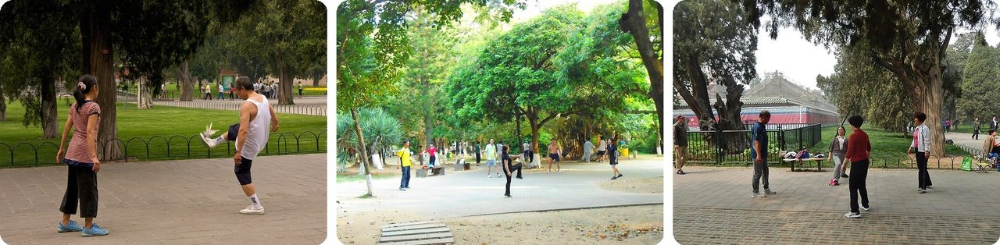

🌍 Top 10 Cricket Fighting and Old-Time Chinese Kids' Games
Nov 22, 2026
1. 🇨🇳 Chinese fighting crickets get tickled with a straw before a match
 In China, cricket fighting (斗蟋蟀) pits two male crickets against each other in a small container. First they're weighed, because fights are matched by weight. In Shanghai there are nine weight classes, from 0.51 to 0.74 grams, so a fighter weighs less than a paper clip.
In China, cricket fighting (斗蟋蟀) pits two male crickets against each other in a small container. First they're weighed, because fights are matched by weight. In Shanghai there are nine weight classes, from 0.51 to 0.74 grams, so a fighter weighs less than a paper clip.
Then each owner tickles their cricket's antennae with a thin straw until it gets angry. A divider is lifted, and the two crickets go at it. The loser is the first one that backs away, runs off, stops chirping, or jumps out of the ring.
And here's the twist: a beaten cricket put back in the ring fights again only 1 time in 10. But if it's shaken and tossed in the air a few times first, it fights again 6 times in 10.
Basically, a quick "flight" is a pep talk for crickets.
2. 🇨🇳 A prime minister's cricket hobby was blamed for an empire's fall
 Cricket fighting goes back more than 1,000 years, to the emperors of the Tang dynasty, and regular people picked it up later. In the 1200s, Jia Sidao, the prime minister of the Southern Song dynasty, wrote a how-to guide for it.
Cricket fighting goes back more than 1,000 years, to the emperors of the Tang dynasty, and regular people picked it up later. In the 1200s, Jia Sidao, the prime minister of the Southern Song dynasty, wrote a how-to guide for it.
He was so obsessed that his cricket habit is believed to have helped bring down the empire. Much later, during the Cultural Revolution (1966–1976), China's government banned cricket fighting as a rich people's hobby.
It came back anyway. In 2010, people in China spent more than 400 million yuan (about US$63 million) on crickets, and Shanghai alone has more than a dozen cricket markets.
Think of it as a hobby that outlived the empire that loved it.
3. 🇨🇳 Chinese crickets spent the winter in gourds grown inside molds
 Pet crickets in China lived in clay jars in summer and in gourds (hard-shelled fruits, like small squash) in winter. The fanciest gourds weren't carved. They were grown into shape.
Pet crickets in China lived in clay jars in summer and in gourds (hard-shelled fruits, like small squash) in winter. The fanciest gourds weren't carved. They were grown into shape.
Royal gardeners put a tiny young gourd inside a carved mold, and as it grew, it filled the mold and copied its pattern. For a long time, only the Forbidden City, the emperor's palace, was allowed to make them. The lids were cut to make the cricket's song sound better.
The oldest surviving molded gourd is from 1238 and is kept in a temple in Japan. The Yongzheng Emperor held a gourd in his hand even while he slept.
In other words, the cricket's house was grown in a garden, not built.
4. 🇨🇳 Jianzi is a shuttlecock you play with your feet

In jianzi (毽子), you keep a heavy shuttlecock in the air using any part of your body except your hands, mostly your feet. It's usually four feathers stuck into a rubber base and weighs 15 to 25 grams, about as much as four sheets of printer paper.People in China have played it since the Han dynasty, which began over 2,200 years ago. It grew out of cuju, an old football-like game used to train soldiers. Players often stand in a circle of 5 to 10 people and just try to keep it up.
In 1936, a Chinese athlete from Jiangsu showed it off at the Olympics in Berlin, and people in Germany started playing too. In Vietnam it's called đá cầu, and it's the national sport.
It's hacky sack with feathers.
5. 🇨🇳 The Chinese yo-yo hums because it's hollow
 The Chinese yo-yo, or diabolo (抖空竹, dǒu kōngzhú), is a spool with two wheels that you spin on a string tied between two sticks. A book from the late Ming dynasty, between 1572 and 1620, called it kōngzhōng, "air bell."
The Chinese yo-yo, or diabolo (抖空竹, dǒu kōngzhú), is a spool with two wheels that you spin on a string tied between two sticks. A book from the late Ming dynasty, between 1572 and 1620, called it kōngzhōng, "air bell."
That name explains the trick. The wheels are hollow and have holes in them. When the toy spins fast, air rushes through the holes and makes a loud humming sound. Skilled players can supposedly spin one at 2,000 turns a minute, about 33 turns every second.
A missionary described it from Beijing in 1792, and it became a craze in Europe. It got so wild that the police chief of Paris once banned it from the streets.
So it's a toy that doubles as a musical instrument.
6. 🇨🇳 Whip-tops in China are over 3,000 years old
 Spinning tops are the oldest known toys, found on every continent where people live. In China, archaeologists have found tops from around 1250 BCE, including whip-tops, so people there have been spinning them for about 3,270 years.
Spinning tops are the oldest known toys, found on every continent where people live. In China, archaeologists have found tops from around 1250 BCE, including whip-tops, so people there have been spinning them for about 3,270 years.
A whip-top works like this: you wrap the whip's string around the top, then swing the handle. The string whips off and flings the top spinning.
In parts of China, people of the Yi, Wa, Yao and Miao groups still spin tops, and since 1995 top spinning has been part of China's national games for ethnic minorities.
Basically, you start this toy by cracking a whip.
7. 🇨🇳 Chinese jump rope is a giant rubber band that keeps rising
 Chinese jump rope (跳皮筋, tiàopíjīn) uses a loop of rubber bands or stretchy rope at least six feet long, about as long as a grown-up is tall. Two kids stand inside it with the loop around their ankles, pulling it tight.
Chinese jump rope (跳皮筋, tiàopíjīn) uses a loop of rubber bands or stretchy rope at least six feet long, about as long as a grown-up is tall. Two kids stand inside it with the loop around their ankles, pulling it tight.
A third kid jumps between the two sides, doing moves called "in," "out," "side" and "on," often to a chant. Get through the moves without a mistake, and the rope goes up: from the ankles up to the waist and even higher.
The game has spread around the world. It's called "elastics" in Britain and Australia, "French skipping" in some places, and "Chinese garter" in the Philippines.
Think of it as a high jump bar that you have to dance through.
8. 🏠 In China, hopscotch is called "jumping the houses"
 In hopscotch, you toss a small object, like a stone, into numbered boxes drawn on the ground, then hop through the boxes and pick it up. In China it's called tiào fángzi (跳房子), "jumping the houses."
In hopscotch, you toss a small object, like a stone, into numbered boxes drawn on the ground, then hop through the boxes and pick it up. In China it's called tiào fángzi (跳房子), "jumping the houses."
Nobody knows exactly where it started. There's no proof of the game before the 1500s, and every country gives it its own name. In Germany it's "Heaven and Hell," and in Italy one name for it means "bell."
The fastest hopscotch game in the Guinness World Records took Ashrita Furman 1 minute and 2 seconds, about as long as it takes to brush your teeth halfway.
Every box is a little house you're only allowed to visit on one foot.
9. ⭕ Kids have rolled hoops in China for about 3,000 years
 Hoop rolling is simple: you push a big hoop along the ground with a stick and run after it so it doesn't fall over. In China, the game is believed to go back to 1000 BC or earlier.
Hoop rolling is simple: you push a big hoop along the ground with a stick and run after it so it doesn't fall over. In China, the game is believed to go back to 1000 BC or earlier.
It wasn't always welcome. In 1840s London, newspapers complained about "The Hoop Nuisance": kids' iron hoops kept banging into people's shins. Police took hoops away from boys and girls, but the complaints only grew.
In the 1860s, Charles Babbage blamed hoop-rolling boys for sending hoops under horses' legs, so riders got thrown. In 1864 he was mocked in Britain's Parliament for starting "a crusade" against hoops.
In other words, a hoop and a stick were enough to make grown-ups panic.
10. 🇨🇳 Chinese kites got their name from the sound they made
 Chinese stories say the philosophers Mozi and Lu Ban flew wooden kites in the 400s BC. After paper was invented in the Han dynasty, paper kites took over. By 549 AD, a kite was used to carry a message for a rescue mission.
Chinese stories say the philosophers Mozi and Lu Ban flew wooden kites in the 400s BC. After paper was invented in the Han dynasty, paper kites took over. By 549 AD, a kite was used to carry a message for a rescue mission.
During the Tang dynasty, people tied bamboo flutes and whistles to kites so they'd make noise. That's where the modern word fēngzheng (风筝) comes from: it was named after the sound kites made in the wind.
Today, Weifang in Shandong is known as the kite capital of the world. It has the world's largest kite museum and holds a kite festival every April.
So a Chinese kite is a flying whistle.
Fun fact
Cricket fighting even made it into a famous Chinese ghost story. In "The Fighting Cricket," by Pu Songling, the emperor is so obsessed with fighting crickets that a boy turns into one to save his father. It was published in 1740 in Strange Tales from a Chinese Studio, a whole book of supernatural tales. If you liked this one, those strange old tales are a whole world to explore.
Photo credits (Wikimedia Commons)
- #1: Grillenkampf in China 1903.jpg by André Castaigne, Public domain
- #1: Shanghai Urban History Development Museum, Cricket Fighting (10178958006).jpg by Gary Todd from Xinzheng, China, CC0
- #1: A cricket match- tickling crickets with rats' whiskers to encourage them to fight. (1910).jpg by unknown, Public domain
- #2: Cricket fighting - container of crickets.jpg by Pauloleong2002, CC BY-SA 4.0
- #2: Chinese crickets.jpg by IvanWalsh.com from Shanghai, China, CC BY 2.0
- #2: Jia Sidao.1.jpg by Unknown authorUnknown author, Public domain
- #3: Cricket cages gourd and ivory 18th-19th centuries CE Qing Dynasty (1644-1911 CE) Beijing China.jpg by Mary Harrsch, CC BY-SA 4.0
- #3: MET 28 186 46.jpg by unknown, CC0
- #3: MET 28 186 7.jpg by unknown, CC0
- #4: Jianzi players.jpg by Janus Bahs Jacquet from Copenhagen, Danmark, CC BY-SA 2.0
- #4: Haikou People's Park - people playing jianzi - 01.jpg by Anna Frodesiak, CC0
- #4: Kick Shuttlecock (Jianzi) (flickr) by mikecogh, CC BY-SA 2.0
- #5: 学空竹的小学生.JPG by 三猎, CC BY-SA 4.0
- #5: 抖空竹的老人 #VSCO #latergram (flickr) by 小飞虹, CC BY-SA 2.0
- #5: 空竹零件.JPG by 三猎, CC BY-SA 4.0
- #6: Chinese top Dagny 1.JPG by Immanuel Giel, CC BY-SA 4.0
- #6: 赣州古城墙边公园玩陀螺的老人 打的人没在照片 (flickr) by Drnantu, CC BY-SA 2.0
- #6: Wooden spinning top and whip.jpg by Fumikas Sagisavas, CC0
- #7: Gummitwist-1998Kinder1.jpg by Werner 19:12, 1 October 2007 (UTC), CC BY-SA 3.0
- #7: PM NE 0303 30.jpg by PMRMaeyaert, CC BY-SA 4.0
- #7: Gummitwist-1998Kinder2.jpg by Werner 19:14, 1 October 2007 (UTC), CC BY-SA 3.0
- #8: 跳房子 Hopscotch - panoramio.jpg by lienyuan lee, CC BY 3.0
- #8: Chinese-American girl playing hopscotch 8d21950v.jpg by Marjory Collins, Public domain
- #8: SJACPS Hopscotch 191210 1.JPG by Honeybee, CC BY 3.0
- #9: 滚铁环的小孩 (flickr) by Drnantu, CC BY-SA 2.0
- #9: Boy with a hoop. (51915119994).jpg by Bernard Spragg. NZ from Christchurch, New Zealand, Public domain
- #9: Boys with hoops on Chesnut Street.jpg by Unknown authorUnknown author, Public domain
- #10: Kite of Chinese dragon.jpg by 虎眉, CC BY-SA 2.5 cn
- #10: Kite Flying Tiananmen Square (flickr) by moonlet.me, CC BY-SA 2.0
- #10: Weifang World Kite Museum.jpg by Ngguls, CC BY-SA 4.0

.jpg){kind=link}
.jpg){kind=link}


_Beijing_China.jpg){kind=link}


.jpg){kind=link}